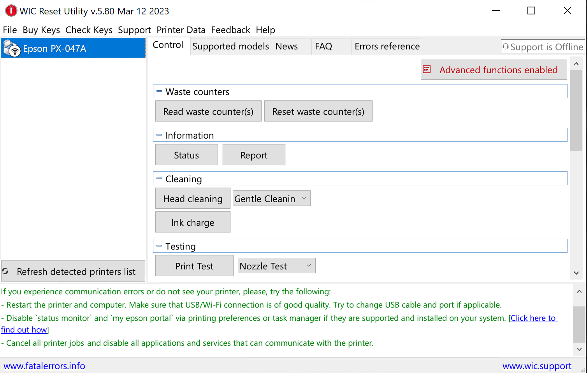
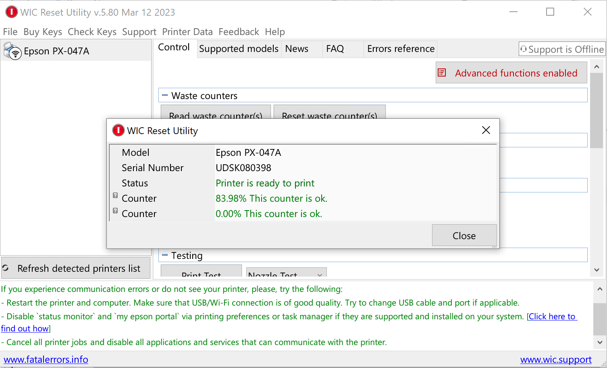
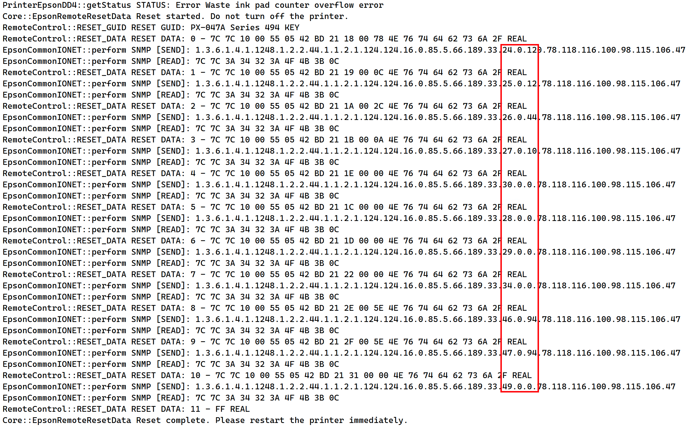
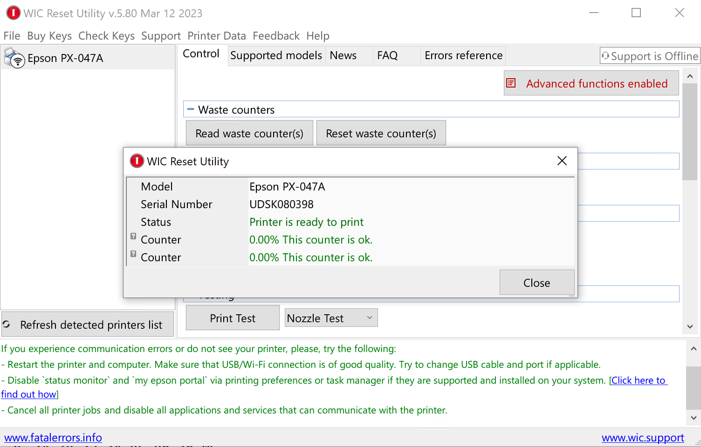

EPSON廃インク吸収パッドのリセット方法
「WIC Reset Utility（以下wicreset）」という有料ソフトのトライアルを使用して、廃インク吸収パッドカウンタ（Waste Ink Counters、以下WIC）のデータの格納位置を特定し、自分で数値を変更する方法を紹介します。
準備
wicreset：https://www.wic.support/
epson-printer-snmp：https://github.com/Zedeldi/epson-printer-snmp
プリンターをネット経由で接続し、wicresetに表示されていることを確認してください。
（Close assistant for this session または Close assistant forever を押すと、邪魔なダイアログボックスが消えます。）
0.予備知識
読み取り指令
{eeprom_link}.124.124.7.0.{password}.65.190.160.{oid}.0
書き込み指令
{eeprom_link}.124.124.16.0.{password}.66.189.33.{oid}.0.{value}.84.98.116.98.111.114.118.98
eeprom_linkはどのプリンターも1.3.6.1.4.1.1248.1.2.2.44.1.1.2.1だそうです。
passwordは0.0から255.255で構成されて、プリンターの型番によって異なる値です。
84.98.116.98.111.114.118.98は「書き込み」を意味する指令で、プリンターの型番によって異なります。
oidは値が格納されているアドレスです。
1.passwordと書き込み指令を確認する
wicresetの [Waste counters] - [Read waste counter(s)] を押して、WICを確認します。
WIC1は「廃インク吸収パッド」、WIC2は「フチなし印刷用廃インク吸収パッド」と呼ぶそうです。
廃インク吸収パッドの使用量が83.98%です。
次に、下の [Serial Number] - [Read] と [Serial Number] - [Write] を押します。
これで「読み取り」と「書き込み」をしたのでwicresetのログにpasswordと書き込み指令が残っているはずです。
ログは%appdata%\wicreset\application.logに保存されています。
私のプリンタのpasswordは85, 5、書き込み指令は78.118.116.100.98.115.106.47です。
24, 25, 30, 26, 27, 34を読み取ったあとWICが出たのでおそらくWICはこれらのOIDにで保存されています。
epson-printer-snmpのmain.pyを開き、passwordと書き込み指令を変更します。
password: list[int] = field(default_factory=lambda: [101, 0])
⇒password: list[int] = field(default_factory=lambda: [85, 5])
".84.98.116.98.111.114.118.98"
⇒".78.118.116.100.98.115.106.47"
2.WICを0に変更してみる
WICの格納位置
WICは、連続した4つのOIDに格納されます。私の場合24, 25と26, 27にWIC1とWIC2の値がそれぞれ格納されています。
30と34についてはこちらをご覧ください、これらの値が0の場合は無視して結構です。
epson-printer-snmpのmain.pyを開き、reset_waste_ink_levelsメゾットのdataを以下のように変更します。
1 | data = {24: 0, 25: 0, 26: 0, 27: 0} |
一番最後に
1 | session.reset_waste_ink_levels() |
を追加し、実行します。
WICが一時的に0リセットされているはずです、プリンターを再起動し、印刷またはノズルクリーニングを行なってください。
WICが0のままであれば……
おめでとうございます、廃インク吸収パッドを物理的に取り出し、洗浄+交換をしましょう。
手袋を着用し、服は深い色を選ぶことを強くおすすめします。
3.WICを限界以上に設定する
残念ながら、私のプリンターは印刷をすると、WIC1が元の値に戻ってしまいます。
どうやっら隠された場所にもWIC1の値が格納されているようです。
wicresetのトライアルキーを使って、どこにあるかをみていきましょう。
「限界に達した」っていうエラーが出ないと、wicresetのトライアルを使用することはできないため、WICが限界以上に設定し、エラーを発生させる必要があります。
既にWICが限界以上でエラーが出ている方はやる必要がありません。
WICの計算方法
ログから24, 25に0x17, 0x0D が保存されていることがわかります。
これを逆順番に並んで、10進数に変換すると
0x0D17⇒3351
これがWIC1の使用済みの量です。WIC1の総吸収量で割るとパーセンテージになります。
なので私のプリンタのWIC1の総吸収量は3351/83.98%=3990です。
※WIC2の総吸収量と異なります。※
WICを99%に変更
3990*99%=3950⇒0x0F6E
なので24を0x6E、25を0x0Fに設定します。
reset_waste_ink_levelsメゾットのdataを以下のように変更します。
1 | data = {24: 0x0F, 25: 0x6E} |
一番最後に
1 | session.reset_waste_ink_levels() |
を追加し、実行します。
再起動すると、「限界に達した」っていうエラーが出るはずです。
4.トライアルキーでリセット
[Waste counters] - [Reset waste counter(s)] を押して、trialを入力し、[OK] を押します。
WIC1とWIC2両方が80%にリセットされたはずです。
5.書き込まれたOIDの意味
ログを確認すると、以下のOIDが書き込まれたことがわかります。
| OID | 値 | 備考 |
|---|---|---|
| 24 | 120 | WIC1の表示用データ |
| 25 | 12 | WIC1の表示用データ |
| 26 | 44 | WIC2のデータ |
| 27 | 10 | WIC2のデータ |
| 30 | 0 | WIC1の表示用データ |
| 28 | 0 | WIC1の隠しデータ |
| 29 | 0 | WIC1の隠しデータ |
| 34 | 0 | WIC2のデータ |
| 46 | 94 | WIC1の限界(%) |
| 47 | 94 | WIC2の限界(%) |
| 49 | 0 | 不明 |
数回の書き込み、再起動、印刷で、プリンターの動きや各OIDの意味が大体わかりました。
28, 29にWIC1のデータがに不明なアルゴリズムで格納されています。
プリンターは印刷ジョブを受信する度に、隠しデータと表示用データを比較し、大きい値を信頼します。
6.WICを0に変更してみる
今度はWIC1の隠しデータと思われる28, 29も0に設定します。
reset_waste_ink_levelsメゾットのdataを以下のように変更します。
1 | data = {24: 0, 25: 0, 30: 0, 26: 0, 27: 0, 34: 0, 28: 0, 29: 0, 46: 94, 47: 94, 49: 0} |
実行し、再起動すると、WICが0%になって、印刷やノズルクリーニングを行っても値は戻りません。
おめでとうございます、廃インク吸収パッドを物理的に取り出し、洗浄+交換をしましょう。
手袋を着用し、服は深い色を選ぶことを強くおすすめします。
EPSON廃インク吸収パッドのリセット方法